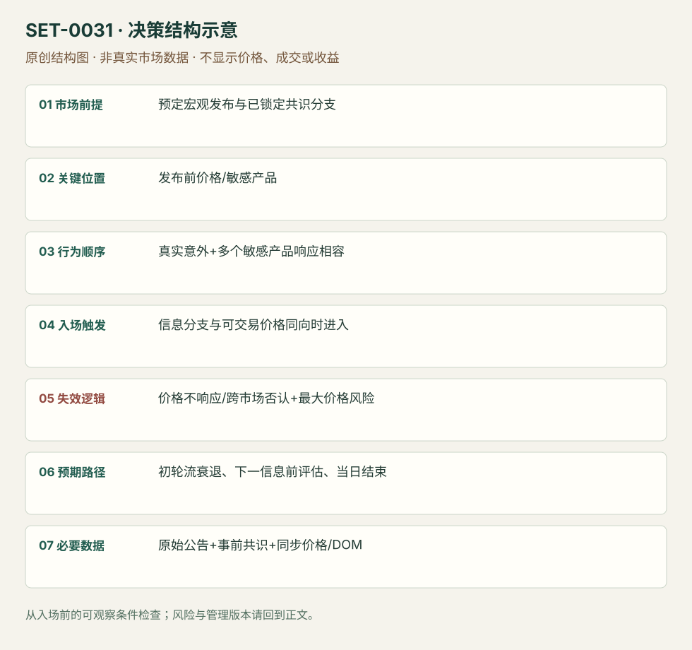

事前预案中的宏观意外与跨市场确认
Preplanned Macro Surprise Reaction · SET-0031 · reviewed · v1.0.0
盈利证据：not_established。审查范围与来源版本见第13节；未知字段保留缺失原因。
1. 名称与快速概览
在预定发布前写出共识和不同意外分支；信息到达后，选择对该信息敏感的产品，并用实际跨市场响应确认方向。没有事前预案的即时新闻追价不属本条。
记录口径：PA supporting；必要数据 official_release、consensus_notes、synchronized_prices、DOM。名称性质：编辑性描述名，英文保留来源术语以便检索。reviewed 只表示本条规则与证据记录审查通过，盈利状态为 not_established。
2. 本质与行为假说
价格重估相对已包含的预期，单看数值大或鹰鸽措辞不够。跨市场确认用来区分文本解释与正在发生的定价；价格不配合便撤掉初始计划。
3. 适用市场与环境
来源FOMC/ECB有明确时刻的宏观公布。需要可靠原始公告和正常可交易市场；跳跃、深度消失或产品暂时停牌时不假设连续成交。
来源实用市场：美国债券/黄金/ES期货（FOMC）、欧洲债券/Eurostoxx/EUR（ECB）。
Session：按原事件日发布时刻执行；FOMC示例14:00 America/New_York，ECB示例以当日发布为起点，原图时区未核。与各产品现金session分开记录，日内结束前平仓。
跨市场：本版不主张已经验证的跨市场迁移；更换市场必须重定数据来源、流动性与session。
4. 出现前的观察清单
提前固定共识来源、关键数值/政策维度、不同方向应响应的产品、无惊喜路线与错误路线。存发布前价位与时钟；避免发布后用新报道重写共识。
5. 形成过程与状态转换
事前共识分支 → 实际信息与共识出现差异 → 多产品价格/流显示相容响应 → 进入最敏感且可执行产品 → 响应消失便退出。
6. Entry trigger 与执行方式
来源可在信息明确且产品立即响应时快速进入；本库要求信息分支与实际方向均成立。官方公告支持内容事实，不提供订单入口；无法读取发布时间或未观察报价，则不能声称抓到首个可成交价。
7. Invalidation 与止损逻辑
主失效是价格没有按计划响应或相关产品集体反向，及时切断；还需发布前确定每笔最大价格风险。事件跳价可能越过保护价，精确缓冲为编辑模块，不能伪称来源统一点数。
8. Exit、target 与 trade management
最初明确重估后随流衰退减仓，下一波信息前评估；消息解读否认即退出。单次文本交易不默认持到下一个记者会；全部为当日风险。
9. 常见 variations
央行与经济数据是事件维度，不能按机构重复计数；选择更敏感市场是执行分支。二次信息到达后改方向归0032。
10. 失败方式与不交易条件
没有提前固定共识；只看标题遗漏其他条件；强行认定所有产品同等敏感；认为预测文本正确就能容忍逆向价格；假设新闻期点差不变。
11. 与相近 setups 的区别
12. 图表与案例解读
已看ECB三市场图。最初强上行之后EUR/Stoxx转弱，不能把整天视为单向成功。公告规模由ECB原文核对，共识和作者订单仍仅来自复盘叙述。
- [VIS-000033] ECB June 2020；定位：Strong reaction in BTP, Euro and Stoxx to increased PEPP。三市场对June2020信息的反应各异，后段也并非持续同向；支持选择敏感产品与动态管理。 验证：chart_viewed。

本地原创示意（VIS-000088，非真实市场数据）：

小屏阅读可打开原尺寸示意图并缩放。

此图用于对照识别顺序与风险定义；不计入真实案例覆盖率。
视觉材料元数据与查看范围
- VIS-000033 · real_source_chart / structure_and_trigger / chart_viewed
品种：BTP / EUR / Eurostoxx；日期：2020-06-04；周期：1分钟，依文章描述；时区：未知/不适用
时区未在图中核对；来源图表不是成交审计 - VIS-000088 · synthetic_structure_diagram / illustration_only / generated_not_market_evidence
品种：未知/不适用；日期：未知/不适用；周期：未知/不适用；时区：未知/不适用
无真实品种、日期或价格：这是结构示意
13. 证据、分歧与未知项
Axia两个事件讨论来自同家族。ECB原公告独立核对实际内容，却不是独立setup/收益验证；“独立事件事实”与“独立交易佐证”分开标注。
- [EVD-000059] Axia Futures，《Trading the Fed Rate Decision》，SRC-0044；定位：Preparing For FOMC / statement first short failure / cross-market clues。支持：先写共识与意外分支；信息看似鹰派但价格不响应时切断初始方向，不能只按文本持仓。
- [EVD-000060] Axia Futures，《How To Trade The ECB Decision – December 2020》，SRC-0045；定位：June2020: which markets react best。支持：PEPP规模相对事前预期变化，不同产品敏感性不同；BTP、Stoxx与EUR反应较Bund强。
- [EVD-000061] ECB，《Monetary policy decisions — 4 June 2020》，SRC-0086；定位：公告第(1)及(2)项。支持：ECB实际决定PEPP增加6000亿欧元并延长；核对公告事实，不核验当时5000亿共识或交易。
审查边界：来源份数与独立核心核验分开；当前类别为 independent_event_facts_only。正文中的概念、官方事实、衍生解说或同族资料只按其支持范围使用。
14. 可用于复盘的检查表
- ☐ 下单前的前提可核对：预定宏观发布与已锁定共识分支
- ☐ 事前标记位置：发布前价格/敏感产品
- ☐ 行为按顺序出现：真实意外+多个敏感产品响应相容
- ☐ 实际触发符合选定版本：信息分支与可交易价格同向时进入
- ☐ 事先写明本次否定条件：价格不响应/跨市场否认+最大价格风险
- ☐ 目标/路径只用当时已知信息：初轮流衰退、下一信息前评估、当日结束
- ☐ 数据满足 原始公告+事前共识+同步价格/DOM；记录时间、点差、滑点、队列和未成交
- ☐ 记录截止平仓及规则偏离；正常亏损不事后改成“未成立”
15. 后续验证问题
共识的实时版本如何存档？选敏感产品的规则能否事前固定？不等待价格确认和等待几秒的成本收益？
双向相关导航
- SET-0029 突发新闻的第一轮价格反应 0031 有事前共识分支与多市场确认；本条处理突然到达的个股信息第一轮。
- SET-0032 多阶段公告的净信息重新判断 0032 已有第一段价格反应，后续信息改变净含义才重新判断。